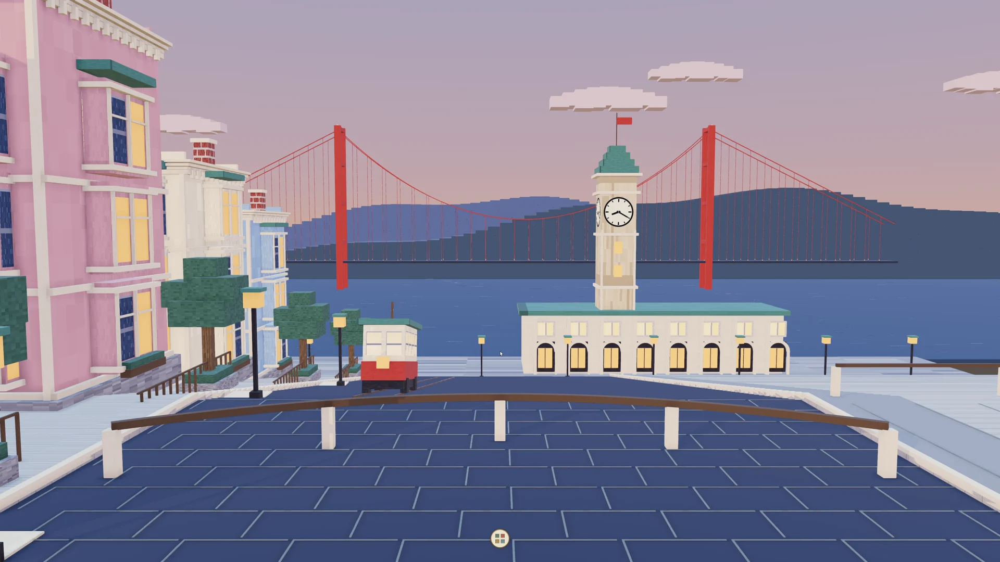

STARLING / AN OPEN SOFTWARE FACTORY
Great software.
For everyone.
We’re building world-class software.
Thoughtful applications. A shared foundation.
Free to use. Open to build on.
A terminal. An office. A desktop.
And the ambition to keep building.
01 / STARLING TERMINAL
Less waiting.
More doing.
A fast terminal for the work you love.
Local shells. Remote workspaces.
Sessions that outlive the connection.
macOS · Windows · Linux
~/projects/next-idea
❯ git status
On branch main
nothing to commit,
working tree clean
❯
02 / STARLING OFFICE
Big ideas.
Start here.
Write something great. Make your point.
Let the numbers tell the story.
An open office suite, right in your browser.
Documents · Presentations · Spreadsheets
03 / STARLING DESKTOP
Your workspace.
A new view.
A familiar 2D desktop. A living 3D city.
Bring your real apps with you.
Choose your perspective.
Ubuntu · Windows through WSL2

▶ Watch the filmStep into the city. Change your point of view.
THE CITY IS YOUR WORKSPACE04 / THE SHARED FOUNDATION
Build once.
Build on it.
Great applications need great foundations.
Our Swift SDK brings the pieces together.
What we build, you can build on.
One open foundation. Many possibilities.
are open, too.Swift · UI · Rendering · Platform hosts ↗
05 / OPEN CODE. SHARED AMBITION.
World-class
is the goal.
Open is the way.
Software should be worth using.
And everyone should be free to use it.
Read the code. Help shape what comes next.
Free to use · Open source · Apache 2.0
A software factory.
A shared future.